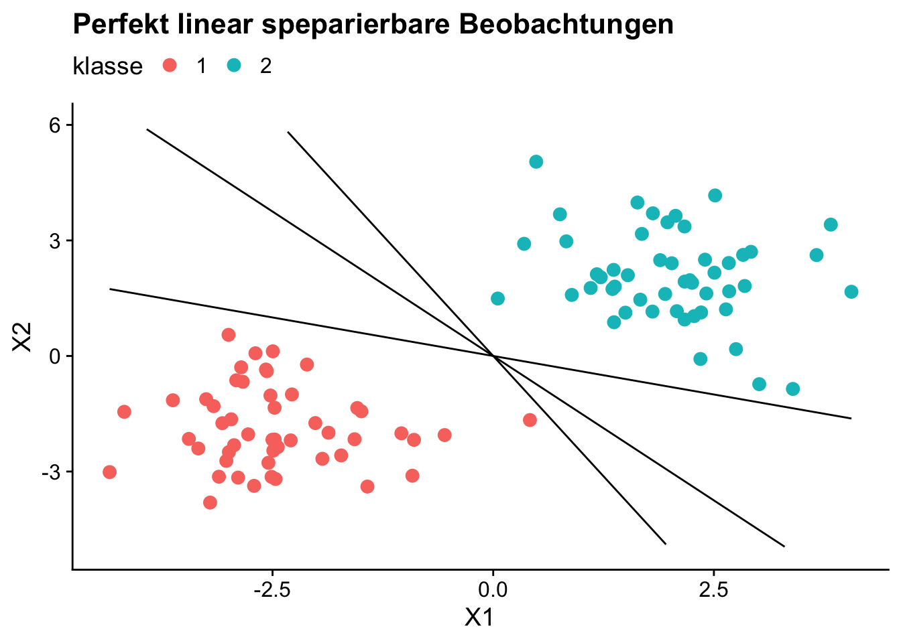
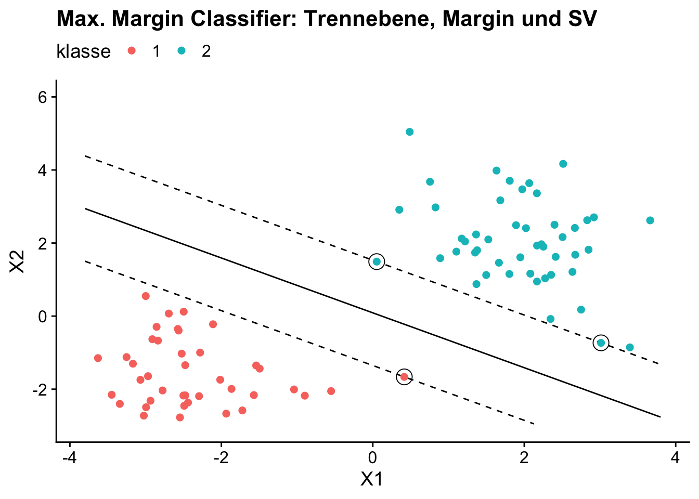
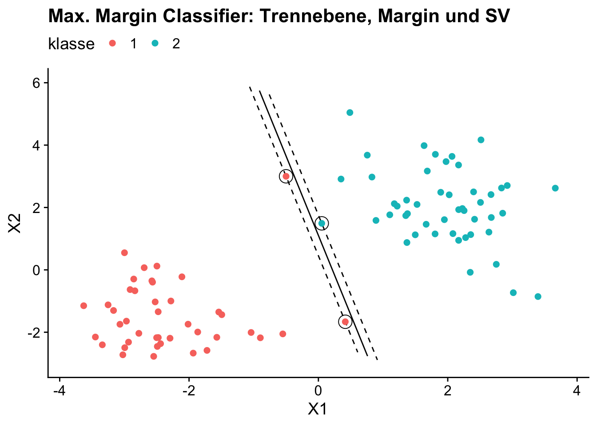
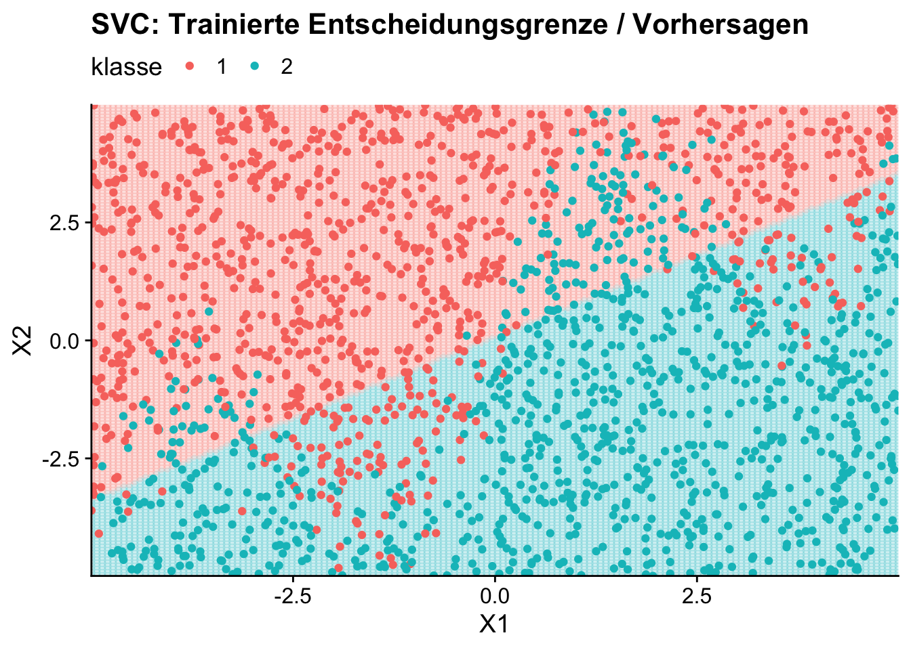
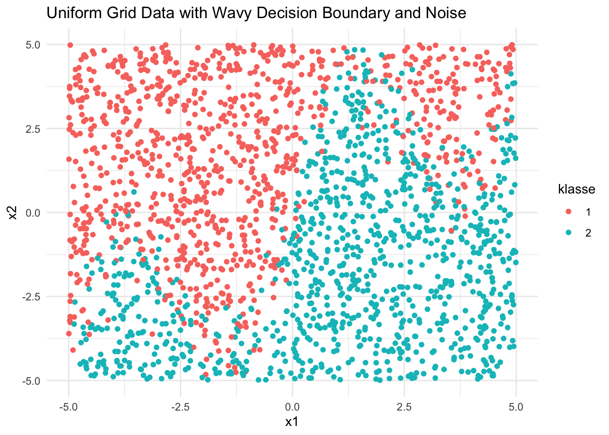
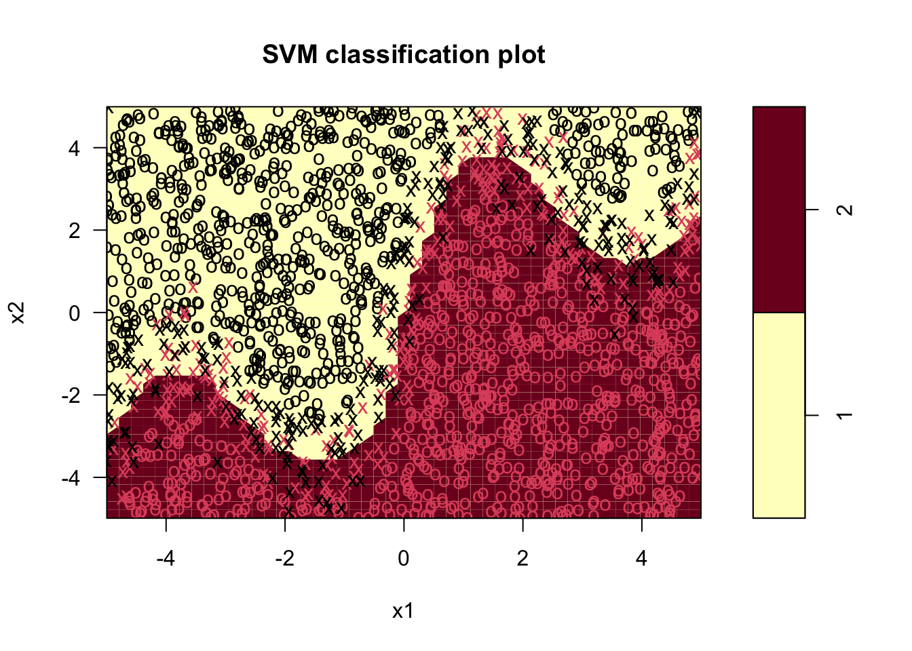
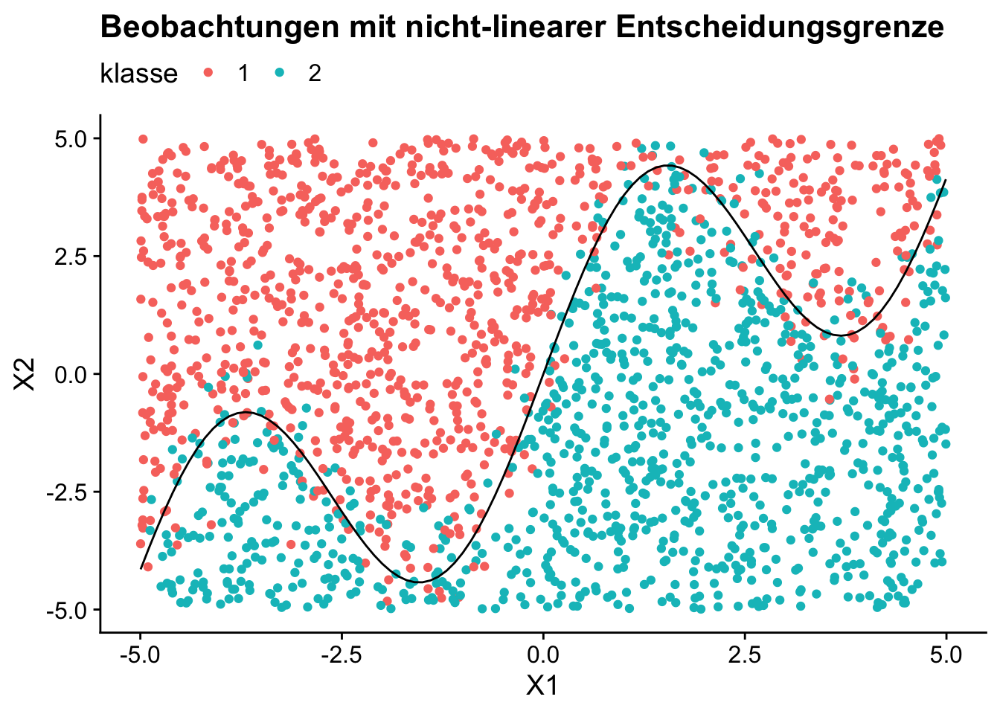
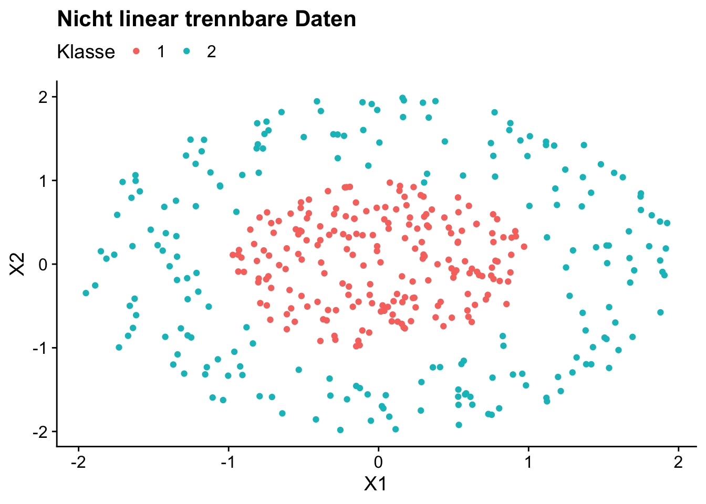

13 Support Vector Machines
Support Vector Machines (SVM) sind eine Methode die sich besonders für Klassifikation von Beobachtungen bei komplexen, nicht-linearen Zusammenhängen in hoch-dimensionalen Datensätzen eignet. Anders als baum-basierte Methoden, die auf der Zerlegung des Regressorraums anhand einfacher Regeln basieren (vgl. Kapitel 14), verwenden SVMs einen geometrischen Ansatz, der auf der Maximierung von Abständen beruht.
Das Ziel eines SVM-Modells ist es, eine Hyperebene (separating hyperplane) zu finden, die zwei (oder mehr) Klassen optimal voneinander trennt, indem der Abstand (margin) zwischen einer bestimmten Anzahl nächstgelegener Datenpunkten der verschiedenen Klassen maximiert wird. Diese Datenpunkte, die der Trennfläche am nächsten liegen, definieren die Klassifikationsregel des Modells und werden als Support-Vektoren (support vectors) bezeichnet. Bei einer hochgradig nicht-linearen Entscheidungsgrenzen können die ursprünglichen Beobachtungen mit einer Kernel-Funktion in einen höherdimensionalen Raum abgebildet werden in dem die Klassen linear trennbar sind.
Im Gegensatz zu Baum-basierten Modellen sind SVMs oft weniger intuitiv interpretierbar, da aus der angepassten Entscheidungsgrenze nicht unmittelbar die Relevanz der Regressoren abgeleitet werden kann.
In diesem Kapitel beschreiben wir die theoretischen Grundlagen von SVMs für Klassifikation von Beobachtungen hinsichtlich einer binären Outcome-Variable und erläutern die Anwendung in R mit parsnip.
13.1 Hyper-Ebenen und der Kernel-Trick
Wir betrachten zunächst ein Klassifikationsproblem mit zwei Prädiktoren \(X_1\), \(X_2\) für die binäre Outcome-Variable \(Y\). Die nächste Abbildung stellt diese Beobachtungen im Prädiktorraum graphisch dar.
library(ggplot2)
library(cowplot)
# Visualisiere den Datensatz mit ggplot2
ggplot(
data = lsvm_data,
mapping = aes(x = x1, y = x2, color = klasse)
) +
geom_point(size = 3) +
labs(
x = "X1",
y = "X2",
title = "Perfekt linear speparierbare Beobachtungen"
) +
# Mögliche Trennebenen
geom_function(fun = \(x) -1.5 * x, col = "black") +
geom_function(fun = \(x) -2.5 * x, col = "black") +
geom_function(fun = \(x) -.4 * x, col = "black") +
lims(y = c(-5, 6)) +
theme_cowplot() +
theme(legend.position = "top")
Trennebenen
SVM für Klassifikation basiert auf der Idee, eine Trennhyperebene \[\begin{align} \boldsymbol{w}'\boldsymbol{X} + b = 0 \label{eq:sepplane} \end{align}\] im Prädiktorraum zu finden, welche die Datenpunkten hinsichtlich ihrer Klasse möglichst gut trennt.
Definiere die abhängige Variable als \[\begin{align*} y = \begin{cases} -1, & \textup{wenn Beob. $i$ Klasse A hat,}\\ 1, & \textup{wenn Beob. $i$ Klasse B hat} \end{cases} \end{align*}\]
Wähle \(\boldsymbol{w}\) und \(b\) so, dass die Ungleichung
\[\begin{align} y_i(\boldsymbol{w}'\boldsymbol{X}_i + b) \geq 0 \label{eq:sepcond} \end{align}\]
erfüllt ist, d.h.
\[\begin{align*} \boldsymbol{w}'\boldsymbol{X}_i + b \geq 0 & \quad \textup{für} \quad y_i = 1,\\ \boldsymbol{w}'\boldsymbol{X}_i + b \leq 0 & \quad \textup{für} \quad y_i = -1. \end{align*}\]
In unserem Beispiel mit zwei Regressoren \(X_1\), \(X_2\) ist \(\boldsymbol{w} = (w_1,\,w_2)'\) und \(\boldsymbol{X}=(X_1,\,X_2)'\). Der Prädiktorrraum ist also zwei-dimensional. Jede Hyperebene in diesem Raum ist ein-dimensional, kann also formal durch eine Geraden-Gleichung der Form \[\begin{align*} x_2 = \alpha_1\cdot x_1 + \alpha_0 \end{align*}\] dargestellt werden: Durch Umformen von \(\eqref{eq:sepplane}\) erhalten wir \[\begin{align*} &\, w_1 \cdot x_1 + w_2 \cdot x_2 + b = 0\\ \\ \Leftrightarrow &\, x_2 = -\left(\frac{w_1}{w_2}\right) \cdot x_1 - \frac{b}{w_2} \end{align*}\]
In Abbildung XYZ erkennen wir, dass die Beobachtungen durch eine Gerade mit negativer Steigung perfekt separiert werden können.
Wenn die Daten perfekt separierbar sind (und die Regressoren kontinuierlich sind) gibt es unendlich viele Ebenen, die Bedingung \(\eqref{eq:sepcond}\) erfüllen. Welche Hyperebene (also welche Parameter \(\boldsymbol{w},\,b\)) gewählt werden sollen, muss durch weitere Bedingungen festgelegt werden.
Maximal Margin Classifier
Ein Maximal Margin Classifier (MMC) wählt die trennende Ebene wie folgt: Bestimme \(\{\boldsymbol{w},b\}\) und \(M\) unter der Bedingung \(\sum_{j=1}^k w_j^2 = 1\) so, dass für sämtliche Beobachtungen gilt, dass
\[\begin{align*} Y_i(\boldsymbol{w}'\boldsymbol{X}_i + b) \geq M, \quad \forall i \in \{1, \dots, n\}, \end{align*}\]
wobei \(M\), der minimale Abstand aller Beobachtungen zur trennenden Ebene, maximiert wird. Der Parameter \(M\) definiert hier die Margin: Die minimale zulässige Distanz der Beobachtungen zur trennenden Hyperebene.
Beobachtungen, die exakt die Distanz \(M\) zur Trennebene haben, sind die Support-Vektoren (SV). Beachte: Ausschließlich die SV definieren die angepasste Entschiedungsgrenze des Maximal Margin Classifiers.
library(e1071)
# Trainiere das Modell
model_mm <- svm(
klasse ~ .,
data = lsvm_data,
kernel = "linear",
cost = 1e8,
scale = F
)
coef(model_mm)(Intercept) x1 x2
0.06210578 -0.52107776 -0.69398704 # A tibble: 3 × 2
x1 x2
<dbl> <dbl>
1 0.416 -1.66
2 3.01 -0.732
3 0.0518 1.49 ggplot(data = lsvm_data, mapping = aes(x = x1, y = x2, color = klasse)) +
labs(x = "X1", y = "X2", title = "Max. Margin Classifier: Trennebene, Margin und SV") +
# Trennlinie und Marginallinien beibehalten
geom_function(fun = \(x) alpha0 + alpha1 * x, col = "black") +
geom_function(fun = \(x) -(coefs[1] + 1)/coefs[3] + alpha1 * x, col = "black", linetype = "dashed") +
geom_function(fun = \(x) -(coefs[1] - 1)/coefs[3] + alpha1 * x, col = "black", linetype = "dashed") +
geom_point(
data = sv,
mapping = aes(x = x1, y = x2),
size = 5,
shape = 1,
inherit.aes = F
) +
geom_point(size = 3) +
theme_cowplot() +
theme(legend.position = "top")
svm_wavy <- readRDS("datasets/svm_wavy.RDS")# Visualisiere den Datensatz mit ggplot2
ggplot(
data = svm_wavy,
mapping = aes(
x = x1,
y = x2,
color = klasse
)
) +
geom_point() +
labs(
x = "X1",
y = "X2",
title = "Nicht perfekt linear speparierbare Beobachtungen"
) +
geom_function(
fun = \(x) x + 3 * sin(x * 1.2),
col = "black"
) +
theme_cowplot() +
theme(legend.position = "top")
# Trainiere MM Classifier
svm(
klasse ~ .,
data = svm_wavy,
kernel = "linear",
cost = 1e5,
scale = F
)
Call:
svm(formula = klasse ~ ., data = svm_wavy, kernel = "linear", cost = 1e+05,
scale = F)
Parameters:
SVM-Type: C-classification
SVM-Kernel: linear
cost: 1e+05
Number of Support Vectors: 50213.2 Support Vector Classifier
Ein Support Vector Classifier (SVC) ist eine Erweiterung des MMC, die es erlaubt, Daten zu klassifizieren, die nicht vollständig separierbar sind. Der MCC versucht eine strikte Trennung der Datenklassen durch eine Hyperebene mit einer “harten” Margin, deren Grenzen durch die Support-Vektoren definierten werden (hard margin). Ein SVC ermittelt eine “weiche” Margin (soft margin) um bei Überlappung der Klassen eine möglichst gute Trennung bei Inkaufnahme von Fehlklassifikationenen zu gewährleisten. Wie bei MMC entspricht die Breite der Margin dem Abstand der Support-Vektoren, welche die Position der trennenden Hyperebene definieren.
Mathematisch wird die Hyperebene durch die Gleichung
[ f() = _0 + _1 x_1 + _2 x_2 + + _p x_p ]
beschrieben, wobei \(\boldsymbol{\beta} = (\beta_1, \beta_2, \dots, \beta_p)\) die Parameter der trennenden Hyperebene sind. Das Ziel des SVC ist es, die Koeffizienten \(\beta_j\) so zu bestimmen, dass der Margin maximiert wird, während einige Datenpunkte innerhalb des Margins oder sogar auf der falschen Seite der Hyperebene liegen dürfen.
Die Einführung der Slack-Variablen \(\epsilon_i \geq 0\) erlaubt es, dass Beobachtungen \(x_i\) auf der falschen Seite des Margins oder der Hyperebene liegen können, ohne dass das Optimierungskalkühl unlösbar wird wird. Diese Variablen werden durch die Nebenbedingung
[ _{i=1}^{n} _i C, ]
beschränkt, wobei \(C\) ein Regularisierungsparameter ist, der einen Trade-off zwischen der Maximierung der Margin und der Anzahl der tolerierten Fehlklassifikationen regelt: Ein hoher Wert von \(C\) führt dazu, dass der SVC dazu tendiert, weniger Beobachtungen falsch zu kassifizieren, was meist zu einer engeren Margin führt. Ein kleinerer Wert von \(C\) hingegen lässt mehr Fehlklassifikationen zu, jedoch wird die Margin breiter, was das Modell robuster gegenüber Ausreißern macht.
Die Klassifikation einer Beobachtung \(x\) erfolgt gemäß der Regel
[ (f(x^*)) = (_0 + _1 x_1 + _2 x_2 + + _p x_k). ]
Das Vorzeichen der Vorhersagefunktion bestimmt, auf welcher Seite der Hyperebene die Beobachtung liegt, und damit die Klassenzugehörigkeit.
Zusammenfassend ermöglicht der Support Vector Classifier eine flexible Klassifikation, indem er den verwendet und einen Kompromiss zwischen der Maximierung des Margins und der Anzahl der Missklassifikationen findet. Die Support-Vektoren – also die Beobachtungen, die den Margin definieren – spielen dabei eine zentrale Rolle in der Bestimmung der endgültigen Hyperebene.
# Trainiere SV Classifier mit Cost-Kriterium
mmc_nonsep <- svm(
klasse ~ .,
data = svm_wavy,
kernel = "linear",
scale = F
)# Visualisiere die Entscheidungsgrenze mit ggplot2
ggplot() +
geom_point(
data = grid,
mapping = aes(x = x1, y = x2, color = klasse), alpha = 0.1) +
geom_point(
data = svm_wavy,
mapping = aes(x = x1, y = x2, color = klasse)) +
labs(title = "SVC: Trainierte Entscheidungsgrenze / Vorhersagen") +
scale_x_continuous("X1", expand = c(0, 0)) +
scale_y_continuous("X2", expand = c(0, 0)) +
theme_cowplot() +
theme(legend.position = "top")
13.3 Support Vector Machines
# Visualize the data
ggplot(
data = svm_wavy,
aes(x = x1, y = x2, color = klasse)) +
geom_point() +
theme_minimal() +
ggtitle("Uniform Grid Data with Wavy Decision Boundary and Noise")
# Train a support vector machine on the data using a radial basis kernel
radial_svm_model <- svm(
klasse ~ x2 + x1,
data = svm_wavy,
kernel = "radial",
cost = 1,
gamma = 1
)
# Plot the SVM decision boundary
plot(radial_svm_model, svm_wavy)
# Visualisiere die Entscheidungsgrenze mit ggplot2
ggplot() +
geom_point(
data = grid,
mapping = aes(x = x1, y = x2, color = klasse), alpha = 0.1) +
geom_point(
data = lsvm_data,
mapping = aes(x = x1, y = x2, color = klasse), size = 3) +
labs(title = "SVM: Trainierte Entscheidungsgrenze") +
scale_x_continuous("X1", expand = c(0, 0)) +
scale_y_continuous("X2", expand = c(0, 0)) +
theme_cowplot() +
theme(legend.position = "top")
library(ggplot2)
library(cowplot)
# Daten visualisieren
df <- data.frame(X1 = X[, 1], X2 = X[, 2], Klasse = y)
ggplot(df, aes(x = X1, y = X2, color = Klasse)) +
geom_point() +
ggtitle("Nicht linear trennbare Daten") +
theme_cowplot() +
theme(legend.position = "top")